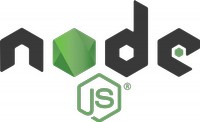
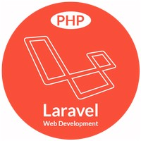

The Web
Categorie
Full Stack Development
Profiel Back End Web Developer Software
 Een Back End Web Developer Software richt zich op server side van website of App en betreft de data laag en daarbij behorende technische infrastructuur. Gelet op aard en karakter zijn er specifieke back end web development software tools beschikbaar.
Een Back End Web Developer Software richt zich op server side van website of App en betreft de data laag en daarbij behorende technische infrastructuur. Gelet op aard en karakter zijn er specifieke back end web development software tools beschikbaar.
→ zie: Wikipedia Front End Back End
Net zoals een timmerman kan kiezen tussen verschillende gereedschappen om een bepaalde taak uit te voeren, is het meestal zo dat bij deze vakman per soort taak één specifieke tool de voorkeur geniet. Bij back end web development zijn er ook voorkeuren; elke soort taak heeft bijbehorende voorkeur software tool. Het is met deze benadering dat navolgende is samengesteld.
Onderstaande software tools "per soort taak" die worden uitgewerkt zijn gekozen op basis van wat op dit moment uit de praktijk blijkt bij zowel werkgevers als bij developers een trend te zijn. Meestal ingegeven door economische redenen. In onderstaande uitwerking wordt daarop dan ook voorgesorteerd, maar niet gezegd dat die uitwerking een absolute gegeven is.
Bijvoorbeeld gestel "Big Acme Company" heeft een App, destijds gebouwd in Java en al meer dan 20 jaar robuust, gedegen, zonder issues prima functionerend; ingeval van changes vraagt opdrachtgever om developer met Java expertise. En als dat veel voorkomt, dan is de trend naar Java, hetgeen eigenlijk niet zo heel veel zegt over of Java anno heden de beste keuze is als vanaf scratch begonnen zou worden.
Taken
Beheersing skill set en taken Full Fledged Front End Web Developer wordt verondersteld. Voor Back End Web Developer Software komt daarbij maken Micro Services en volledige server side programmeren met behulp van framework. De Back End Web Developer Software beheerst minimaal één tool om taken te kunnen verrichten.
Omdat het leren en beheersen van een taal veel tijd vergt is het niet handig om als beginner web developer alles in een keer ter hand te nemen. Aldus de vraag welke back end taal te leren?
Zoals in deze guide hiervoor beschreven is er een trend richting JavaScript (JS) everywere. Deze trend is zowel bij opdrachtgevers als developers; en dat is technisch dicht bij 'in deze guide hier voorafgaand'. Het ligt daarom voor de hand om primair daarop te concentreren.Node.js voor JavaScript op de Back End

Waar JavaScript in de front end wordt uitgevoerd cq executed door de browser, is er in de back end géén browser. Daarvoor in de plaats is Node.js; Dus Node.js wordt als runtime "engine" ingezet om JavaScript op server side te laten functioneren. Voordeel is dat web developer alleen JS hoeft te leren en hanteren voor zowel front end als back end. En dat is vaak de reden dat Node.js cq JavaScript als back end tool wordt gebruikt.
→ zie: Profiel Basic Front End Web Developer Node.js
- Express.js
-
 Express.js is een free open source framework voor Node.js, en ontworpen voor het bouwen van server side gedeelte van webApps en API's met programmeertaal JavaScript. Het is de defacto standaard server framework voor Node.js. Naast Express zijn er ook andere frameworks zoals Koa en Adonis.
Express.js is een free open source framework voor Node.js, en ontworpen voor het bouwen van server side gedeelte van webApps en API's met programmeertaal JavaScript. Het is de defacto standaard server framework voor Node.js. Naast Express zijn er ook andere frameworks zoals Koa en Adonis.
→ zie: Wikipedia Express
→ zie: Website Express get startedExpress is relatief minimaal met veel functies die beschikbaar zijn als plugins. Express is als back end component complementair aan front end frameworks zoals React, Vue of Angular voor bouwen full stack Apps. In bijgaande tutorial wordt gebruik gemaakt van plugin Postman om tijdelijk een database te simuleren. voor verdere uitwerking van databases zie profiel Back End Web Developer Database.
→ zie: YouTube Videotorial Express
Python
Python wordt heden hoofdzakelijk ingezet voor Machine Learning, Artificial Intelligence (AI) en Big Data data Analyse (zie ook Go). Python is van oorsprong bedoeld als een gemakkelijk leesbare taal. De opmaak is visueel overzichtelijk en gebruikt vaak Engelse trefwoorden. In tegenstelling tot veel andere talen gebruikt het geen accolades om blokken af te bakenen, en puntkomma's na instructies zijn optioneel.
→ zie: Wikipedia Python
→ zie: Website Python get started
- Django
-
Django is een free open source Python Web framework op hoog niveau voor snelle ontwikkeling met clean pragmatisch resultaat. Gebouwd door ervaren ontwikkelaars, neemt het veel gedoe weg van webontwikkeling, zodat gebruiker zich kan concentreren op het schrijven van App zonder het wiel opnieuw uit te vinden. Naast Django zijn er ook andere frameworks zoals Flask, Web2py, Bottle en CherryPy.
→ zie: Wikipedia Django
→ zie: Website Django get startedHet primaire doel van Django is om het maken van complexe, database gestuurde websites te vergemakkelijken. Het framework benadrukt herbruikbaarheid en "pluggability" van componenten, minder code, snelle ontwikkeling en het principe van herhalingen voorkomen. In bijgaande tutorial wordt gebruik gemaakt van default go to database SQLite. Voor verdere uitwerking van databases zie profiel Back End Web Developer Database.
→ zie: YouTube Videotorial Django
PHP
PHP is een free open source scripttaal bedoeld om op webservers dynamische webpagina's te creëren. Aanvankelijk stonden de letters PHP voor Personal Home Page, maar nu is het PHP: Hypertext Preprocessor. Deze naam geeft aan waar de taal meestal voor gebruikt wordt: informatie verwerken tot hypertext, meestal HyperText Markup Language (HTML) en Extensible HyperText Markup Language (XHTML).
→ zie: Wikipedia Python
→ zie: Website PHP get started
PHP is vergelijkbaar met Perl, Python en Ruby. Qua syntaxis lijkt PHP het meest op C. In tegenstelling tot C is het in PHP mogelijk object georiënteerd te programmeren, net als in bijvoorbeeld Java, C++ en C♯. Net als bij veel andere scripttalen moeten variabelen voorafgegaan worden door een dollarteken ('$'). Dit in tegenstelling tot talen als C, C++ en Java. Dit is overgenomen uit de scripttaal Perl, waarvan PHP mede is afgeleid. Naast server side scripting kan PHP ook gebruikt worden via de opdrachtregel of in grafische applicaties, bijvoorbeeld met PHP met GTK+.
- Laravel
-
 Laravel is een free open source PHP Web framework bedoeld voor de ontwikkeling van web applicaties volgens het architecturale Model View Controller (MVC) patroon en gebaseerd op Symfony.
→ zie: Wikipedia Laravel
→ zie: Website Laravel get startedEnkele van de kenmerken van Laravel zijn een modulair Package systeem met een speciale afhankelijkheidsmanager, verschillende manieren om toegang te krijgen tot relationele databases, hulpprogramma's die helpen bij de implementatie en het onderhoud van applicaties en de oriëntatie op syntact.
Go - Golang
Go is volgens senior web developers een min of meer verbeterde versie van JavaScript en Python, het is simpel in gebruik, levert uniforme en makkelijk leesbare code, geeft zeer goede performance, is goed geschikt voor team samenwerking en is praktisch hanteerbaar want kan worden gecompileerd Linux, macOS, FreeBSD, Windows, Android en voor i386, amd64 en ARM processorarchitecturen.
→ zie: Wikipedia Go
→ zie: Website Go get started
Omdat Go code wordt gecompileerd is performance beter dan bij interpreted taal zoals Python. Door Go "eenvoud" haalt het de complexiteit weg zoals bij Java (zie onderstaande bij "meer back end talen"). En Go compilertijd is minimaal; Bij C en C++ is dat een bottle nek want wachttijd haalt de flow uit development.
Golang wordt als naamaanduiding gebruikt omdat bij zoeken via search engines het woord Go teveel verwarring geeft. Go is statisch getypeerd met een syntaxis die los op C is gebaseerd. Go bevat garbage collection, typebeveiliging, mogelijkheden voor dynamische types, een grote ingebouwde bibliotheek en extra ingebouwde typen zoals arrays met een variabele lengte en maps. Een de GopherJS transpiler compileert Go naar JavaScript voor front end webApps.
→ zie: YouTube Videotorial Go
Meer Back End talen
Voor de volledigheid hierbij gemeld dat er veel meer back end programmeer talen zijn dan hiervoor uitgewerkt. Een reeks daarvan zoals Ruby, Perl, Smalltalk, Eiffel, Ada, Basic, and Lisp stammen uit "begintijd" en worden nog wel gebruikt, bijvoorbeeld in legacy systemen, maar lijken anno heden geen uitgebreide toekomst te hebben.
En er zijn back end talen die de tand des tijds goed hebben doorstaan zoals C, C++, Java, C# die zorgen voor hoge performance omdat deze talen dichter bij binaire machinecode staan. Maar sommige daardoor minder eenvoudig te leren. Deze talen zijn door intensievere leercurve en complexere ontwikkelomgeving en langdurige ontwikkeltijd en duurdere high tech developers voor kleinere projecten minder gevraagd.
Overigens, moderne hardware power achterhaalt in zekere zin de vroegere need for speed keuzes want zelfs "langzame" talen worden anno heden supersnel in runtime executed. Immers, de huidige processor in high end mobiele telefoon is nu sneller dan de processor in een webserver van 7 jaar geleden.
→ zie: Wikipedia Meest gebruikte talen in websites
Verder zijn er moderne of recent ontwikkelde cross platform talen zoals:
→ Rust met IDE IntelliJ had tractie maar door opeenvolgende vele versies wat 'minder'
→ Dart met IDE Flutter hanteert C stijl en kan transcompileren naar JavaScript
→ Kotlin met IDE IntelliJ is "Java light" interoperable in Java domein
→ Tensorflow met SublimeText editor voor neural network machine learning
→ zie: GitHub Statistieken
Afronding profiel
Tot zover het overzicht van tools zoals gebruikt door Back End Web Developer Software.